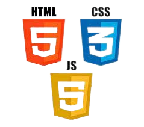
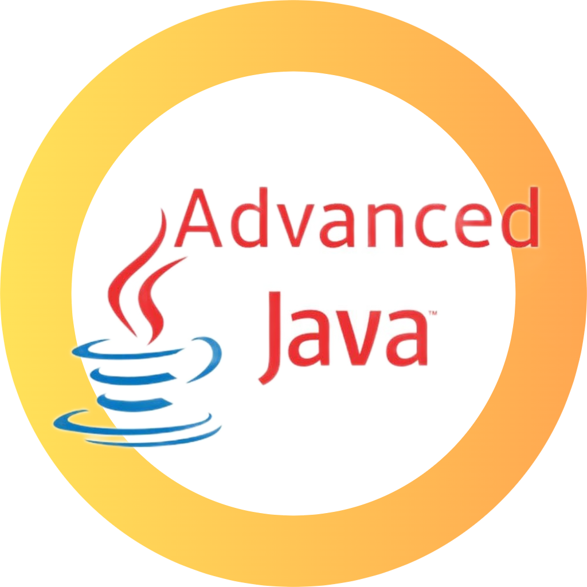

Hello.
I'm a Front-end web developer with a focus on the MERN stack, but still exploring other technologies and frameworks that catch my interest! if you're looking for a developer to add to your team, I'd love to hear from you!
My Skills.

Front-End Design & Development
I started learning to code at the age of 18 because I wanted to create my own websites. Over time, I gained hands-on experience in designing website user interfaces. I have learned HTML, CSS, and JavaScript to build responsive and interactive websites—using HTML for structure, CSS for styling and layout, and JavaScript for dynamic features like animations and form handling. I have practiced these skills by building real projects and personal websites.

Advance Java
In Advance Java, I learned J2EE technologies to build server-side applications. I worked with JDBC for database connectivity, Servlets for handling requests and responses, JPA and Hibernate for ORM and database operations. Through practical examples and projects, I gained a clear understanding of how backend logic, databases, and web applications work together.
Java
I enjoy solving problems using Java, which motivated me to learn Data Structures and Algorithms. I regularly practice coding problems on platforms like LeetCode, GeeksforGeeks, and HackerRank, and I am also exploring open-source contributions with the goal of participating in GSoC. In Java, I have learned core OOP concepts such as abstraction, encapsulation, inheritance, and polymorphism, along with the Collection Framework, which helps me write clean, efficient, and structured code.

Oracle SQL
I have learned Oracle SQL and PL/SQL with hands-on experience in database design and development. I built real-time projects like a Real Estate Management System and an Employee Management System using normalized tables, complex SQL queries, joins, constraints, indexes, and CRUD operations. I worked with views, procedures, triggers, window functions, cursors, and exception handling to implement business logic, optimize performance, and ensure reliable data processing and reporting. These projects helped me understand how databases support real-world applications and business requirements.